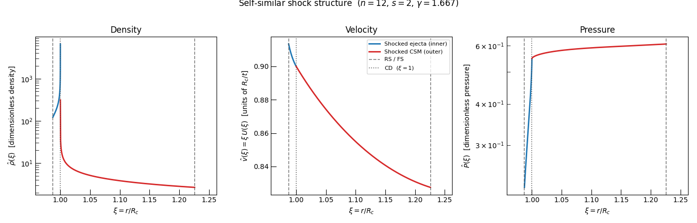
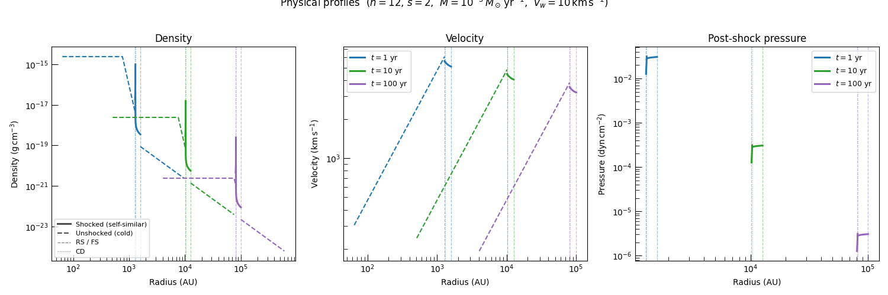
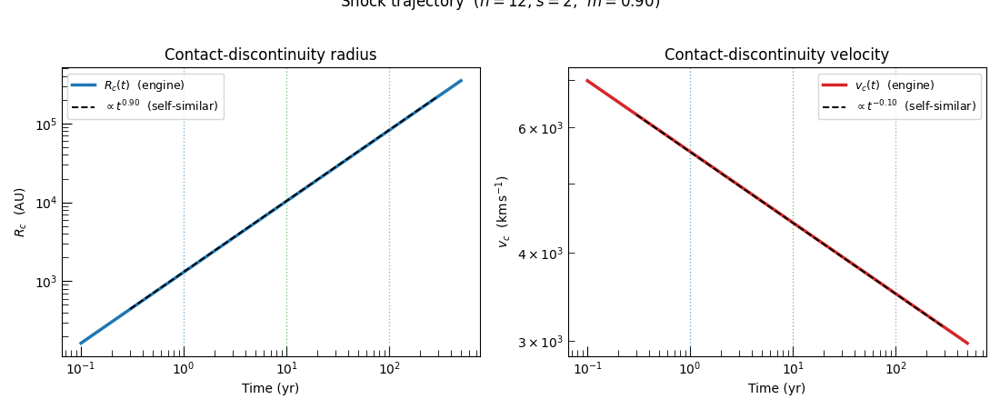

Note
Go to the end to download the full example code.
Chevalier Self-Similar Shock Structure#
This example walks through the internal structure of the Chevalier self-similar two-shock system and maps it back to physical space at a series of snapshot times.
In the Chevalier framework the interaction of homologously expanding supernova ejecta with a power-law circumstellar medium (CSM) produces a pair of shocks — a forward shock (FS) expanding into the CSM and a reverse shock (RS) propagating back through the ejecta — separated by a contact discontinuity (CD) at radius \(R_c(t)\). Because the density profiles are pure power laws in radius and the ejecta expand homologously, the entire structure is self-similar:
where \(n\) is the outer ejecta density index and \(s\) is the CSM density index. Once the dimensionless profiles are computed for a given \((n, s, \gamma)\), physical profiles at any time follow by rescaling \(\xi = r / R_c(t)\).
We use compute_self_similar_functions()
to solve the self-similar ODEs and
ChevalierSelfSimilarWindShockEngine
to evaluate the physical shock trajectory for a representative RSG-wind CSM.
See also
Theory: The Chevalier Self-Similar Solution — full derivation of the self-similar solution including the ODE system, boundary conditions, and physical scalings.
ChevalierSelfSimilarShockEngine
— generalized engine for arbitrary CSM power-law index \(s\).
Setup#
We import the self-similar solver, the wind shock engine, and the BPL ejecta normalizer alongside standard numerical and plotting utilities.
import matplotlib.pyplot as plt
import numpy as np
from astropy import units as u
from matplotlib.lines import Line2D
from trilobite.dynamics.shocks.chevalier import (
ChevalierSelfSimilarWindShockEngine,
compute_self_similar_functions,
)
from trilobite.dynamics.shocks.utils import normalize_bpl_ejecta
from trilobite.utils.plot_utils import set_plot_style
Model Parameters#
We adopt outer ejecta index \(n = 12\), wind CSM index \(s = 2\), and adiabatic index \(\gamma = 5/3\) throughout. For \(n = 12\) the contact-discontinuity expansion index is
i.e., the contact radius decelerates mildly from free expansion.
Solve the Dimensionless Self-Similar Structure#
compute_self_similar_functions()
integrates two ODEs — one inward from the forward shock to the contact
discontinuity and one outward from the reverse shock — to obtain the
dimensionless velocity \(U(\xi)\), density \(\Omega(\xi)\), and
pressure \(P(\xi)\) profiles on the global similarity coordinate
\(\xi = r / R_c\).
The returned ChevalierSelfSimilarFunctions
also carries the dimensionless structure constants: \(A\) (the
self-similar normalization), \(R_{\rm fs}/R_c\), and \(R_{\rm rs}/R_c\).
ss = compute_self_similar_functions(n=n, s=s, gamma=gamma, n_points=1024)
m = ss.expansion_index
print(f"Expansion index m = {m:.4f} (expected {(n - 3) / (n - s):.4f})")
print(f"R_fs / R_cd = {ss.radius_fs_over_radius_cd:.4f}")
print(f"R_rs / R_cd = {ss.radius_rs_over_radius_cd:.4f}")
print(f"Norm. constant A = {ss.A:.6e}")
Expansion index m = 0.9000 (expected 0.9000)
R_fs / R_cd = 1.2259
R_rs / R_cd = 0.9874
Norm. constant A = 3.813917e-02
Dimensionless Shock Structure#
The plots below show the three self-similar fields across the full two-shock region. The vertical dashed lines mark the reverse shock (RS), contact discontinuity (CD, \(\xi = 1\)), and forward shock (FS).
Note
The inner region (\(\xi < 1\)) is the shocked ejecta between the
reverse shock and the contact. The outer region (\(\xi > 1\)) is
the shocked CSM between the contact and the forward shock. All quantities
carry the shared normalization described in
compute_self_similar_functions().
set_plot_style()
fig, axes = plt.subplots(1, 3, figsize=(14, 4.5))
fig.subplots_adjust(wspace=0.32)
_inner_kw = dict(color="C0", lw=2.0, label="Shocked ejecta (inner)")
_outer_kw = dict(color="C3", lw=2.0, label="Shocked CSM (outer)")
_shock_kw = dict(color="0.3", lw=1.2, ls="--", alpha=0.7)
_cd_kw = dict(color="0.3", lw=1.2, ls=":", alpha=0.9)
# ---- density hat ----
ax = axes[0]
ax.semilogy(ss.xi_inner, ss.density_hat[: len(ss.xi_inner)], **_inner_kw)
ax.semilogy(ss.xi_outer, ss.density_hat[len(ss.xi_inner) :], **_outer_kw)
ax.axvline(ss.radius_rs_over_radius_cd, **_shock_kw)
ax.axvline(1.0, **_cd_kw)
ax.axvline(ss.radius_fs_over_radius_cd, **_shock_kw)
ax.set_xlabel(r"$\xi = r / R_c$")
ax.set_ylabel(r"$\hat{\rho}(\xi)$ [dimensionless density]")
ax.set_title("Density")
# ---- velocity hat ----
ax = axes[1]
ax.plot(ss.xi_inner, ss.velocity_hat[: len(ss.xi_inner)], **_inner_kw)
ax.plot(ss.xi_outer, ss.velocity_hat[len(ss.xi_inner) :], **_outer_kw)
ax.axvline(ss.radius_rs_over_radius_cd, **_shock_kw)
ax.axvline(1.0, **_cd_kw)
ax.axvline(ss.radius_fs_over_radius_cd, **_shock_kw)
ax.set_xlabel(r"$\xi = r / R_c$")
ax.set_ylabel(r"$\hat{v}(\xi) = \xi\, U(\xi)$ [units of $R_c / t$]")
ax.set_title("Velocity")
# ---- pressure hat ----
ax = axes[2]
ax.semilogy(ss.xi_inner, ss.pressure_hat[: len(ss.xi_inner)], **_inner_kw)
ax.semilogy(ss.xi_outer, ss.pressure_hat[len(ss.xi_inner) :], **_outer_kw)
ax.axvline(ss.radius_rs_over_radius_cd, **_shock_kw)
ax.axvline(1.0, **_cd_kw)
ax.axvline(ss.radius_fs_over_radius_cd, **_shock_kw)
ax.set_xlabel(r"$\xi = r / R_c$")
ax.set_ylabel(r"$\hat{P}(\xi)$ [dimensionless pressure]")
ax.set_title("Pressure")
# Shared annotations
for ax in axes:
ax.set_xlim(ss.radius_rs_over_radius_cd * 0.97, ss.radius_fs_over_radius_cd * 1.03)
# Single shared legend
legend_handles = [
Line2D([0], [0], **_inner_kw),
Line2D([0], [0], **_outer_kw),
Line2D([0], [0], label="RS / FS", **_shock_kw),
Line2D([0], [0], label="CD ($\\xi = 1$)", **_cd_kw),
]
axes[1].legend(handles=legend_handles, fontsize=8, loc="upper right")
plt.suptitle(
rf"Self-similar shock structure ($n={n:.0f}$, $s={s:.0f}$, $\gamma={gamma:.3f}$)",
y=1.01,
)
plt.tight_layout()
plt.show()

Physical Interpretation#
Several features are immediately visible:
Density peaks at the shocks and falls toward the contact discontinuity on both sides. The jump at \(\xi = R_{\rm rs}/R_c\) (RS) is the Rankine–Hugoniot compression of the incoming ejecta; the jump at \(\xi = R_{\rm fs}/R_c\) (FS) is the compression of the incoming CSM.
Velocity is continuous across the contact (both sides must move with the CD) but has different slopes because the two regions have different density structures.
Pressure is also continuous across the contact by construction of the self-similar solution; the visible kink in the log-scale plot merely reflects the change in the power-law slope of the profile.
The contact discontinuity at \(\xi = 1\) separates shocked ejecta from shocked CSM material. Density is generically discontinuous there.
Physical Setup#
We now choose physical parameters for the explosion and CSM to convert the dimensionless profiles into physical density, velocity, and pressure.
The physical scalings are
for the outer shocked CSM, and the analogous expressions with \(K_{\rm ej}\,t^{n-3}\) for the inner shocked ejecta.
CGS constants for internal use
K_csm_cgs = (M_dot / (4.0 * np.pi * v_wind)).to(u.g / u.cm).value
E_ej_cgs = E_ej.to(u.erg).value
M_ej_cgs = M_ej.to(u.g).value
v_t_q, K_inner_q = normalize_bpl_ejecta(E_ej=E_ej, M_ej=M_ej, n=n, delta=delta)
v_t = v_t_q.to(u.cm / u.s).value
K_inner = K_inner_q.to(u.g * u.cm ** (delta - 3) * u.s ** (3 - delta)).value
K_ej_cgs = K_inner * v_t ** (n - delta) # outer-ejecta normalization K_ej
print(f"K_csm = {K_csm_cgs:.3e} g/cm (wind normalization)")
print(f"K_ej = {K_ej_cgs:.3e} cgs (outer ejecta normalization)")
print(f"v_t = {v_t / 1e5:.1f} km/s (ejecta transition velocity)")
K_csm = 5.014e+13 g/cm (wind normalization)
K_ej = 3.715e+110 cgs (outer ejecta normalization)
v_t = 3610.9 km/s (ejecta transition velocity)
Evaluate the shock radius at each snapshot using the wind shock engine.
engine = ChevalierSelfSimilarWindShockEngine()
t_snap_s = (t_snap_yr * u.yr).to(u.s).value # snapshot times in seconds
snap_state = engine.compute_shock_properties(
time=t_snap_yr * u.yr,
E_ej=E_ej,
M_ej=M_ej,
M_dot=M_dot,
v_wind=v_wind,
n=n,
delta=delta,
)
R_c_snap = snap_state.radius.to(u.cm).value # contact-discontinuity radius at each snapshot
Physical Profiles at Multiple Times#
At each snapshot we plot the full radial profile across five distinct zones:
Free ejecta (\(r < R_{\rm rs}\)): homologously expanding, cold gas with a broken power-law density profile (\(\rho \propto r^{-\delta}\) for \(r < v_t t\) and \(\rho \propto r^{-n}\) for \(r > v_t t\)).
Shocked ejecta (\(R_{\rm rs} < r < R_{\rm cd}\)): post-reverse-shock material with density, velocity, and pressure given by the inner similarity profiles \(\Omega_{\rm in}(\xi)\), \(U_{\rm in}(\xi)\), \(P_{\rm in}(\xi)\).
Shocked CSM (\(R_{\rm cd} < r < R_{\rm fs}\)): post-forward-shock material described by the outer similarity profiles.
Undisturbed CSM (\(r > R_{\rm fs}\)): cold, stationary wind with \(\rho = K_{\rm CSM} r^{-s}\) and negligible thermal pressure.
The contact discontinuity at \(r = R_{\rm cd}\) separates zones 2 and 3; velocity and pressure are continuous there while density jumps. The compression ratio at both shocks is \((\gamma+1)/(\gamma-1) = 4\) for a strong monatomic-gas shock.
set_plot_style()
_AU = 1.495978707e13 # 1 AU in cm
fig, axes = plt.subplots(1, 3, figsize=(15, 5))
fig.subplots_adjust(wspace=0.34)
for i, (t, R_c, color, label) in enumerate(zip(t_snap_s, R_c_snap, snap_colors, snap_labels)):
R_rs = ss.radius_rs_over_radius_cd * R_c # reverse shock radius (cm)
R_fs = ss.radius_fs_over_radius_cd * R_c # forward shock radius (cm)
r_t = v_t * t # BPL transition radius (cm)
# ---- Unshocked ejecta grid (r < R_rs) ----
r_ej = np.geomspace(R_rs * 0.05, R_rs, 500)
v_grid = r_ej / t # homologous velocity (cm/s)
# Broken power-law density: inner (delta) below v_t, outer (n) above v_t
rho_ej = np.where(
v_grid >= v_t,
K_ej_cgs * t ** (n - 3.0) * r_ej ** (-n),
K_inner * t ** (delta - 3.0) * r_ej ** (-delta),
)
v_ej = r_ej / t / 1.0e5 # homologous: v = r/t (km/s)
# ---- Shocked ejecta and shocked CSM (self-similar domain) ----
r_in = ss.xi_inner * R_c
r_out = ss.xi_outer * R_c
rho_in = K_ej_cgs * t ** (n - 3.0) * r_in ** (-n) * ss.Omega_inner
rho_out = K_csm_cgs * r_out ** (-s) * ss.Omega_outer
v_in = (r_in / t) * ss.U_inner / 1.0e5
v_out = (r_out / t) * ss.U_outer / 1.0e5
p_in = K_ej_cgs * t ** (n - 5.0) * r_in ** (2.0 - n) * ss.P_inner
p_out = K_csm_cgs * t ** (-2.0) * r_out ** (2.0 - s) * ss.P_outer
# ---- Undisturbed CSM grid (r > R_fs) ----
r_csm = np.geomspace(R_fs, R_fs * 6, 500)
rho_csm = K_csm_cgs * r_csm ** (-s)
# Marker positions in AU
R_rs_AU = R_rs / _AU
R_cd_AU = R_c / _AU
R_fs_AU = R_fs / _AU
_vl_kw = dict(color=color, lw=0.9, alpha=0.45)
# -- Density --
ax = axes[0]
ax.loglog(r_ej / _AU, rho_ej, color=color, lw=1.5, ls="--")
ax.loglog(r_in / _AU, rho_in, color=color, lw=2.2, label=label)
ax.loglog(r_out / _AU, rho_out, color=color, lw=2.2)
ax.loglog(r_csm / _AU, rho_csm, color=color, lw=1.5, ls="--")
ax.axvline(R_rs_AU, ls="--", **_vl_kw)
ax.axvline(R_cd_AU, ls=":", **_vl_kw)
ax.axvline(R_fs_AU, ls="--", **_vl_kw)
# -- Velocity --
ax = axes[1]
ax.loglog(r_ej / _AU, v_ej, color=color, lw=1.5, ls="--")
ax.loglog(r_in / _AU, v_in, color=color, lw=2.2, label=label)
ax.loglog(r_out / _AU, v_out, color=color, lw=2.2)
ax.axvline(R_rs_AU, ls="--", **_vl_kw)
ax.axvline(R_cd_AU, ls=":", **_vl_kw)
ax.axvline(R_fs_AU, ls="--", **_vl_kw)
# -- Pressure (shocked zones only; unshocked gas is cold) --
ax = axes[2]
ax.loglog(r_in / _AU, p_in, color=color, lw=2.2, label=label)
ax.loglog(r_out / _AU, p_out, color=color, lw=2.2)
ax.axvline(R_rs_AU, ls="--", **_vl_kw)
ax.axvline(R_cd_AU, ls=":", **_vl_kw)
ax.axvline(R_fs_AU, ls="--", **_vl_kw)
axes[0].set_xlabel("Radius (AU)")
axes[0].set_ylabel(r"Density ($\mathrm{g\,cm^{-3}}$)")
axes[0].set_title("Density")
axes[0].legend(fontsize=9)
axes[1].set_xlabel("Radius (AU)")
axes[1].set_ylabel(r"Velocity ($\mathrm{km\,s^{-1}}$)")
axes[1].set_title("Velocity")
axes[1].legend(fontsize=9)
axes[2].set_xlabel("Radius (AU)")
axes[2].set_ylabel(r"Pressure ($\mathrm{dyn\,cm^{-2}}$)")
axes[2].set_title("Post-shock pressure")
axes[2].legend(fontsize=9)
# Shared style legend
_style_handles = [
Line2D([0], [0], color="0.3", lw=2.2, ls="-", label="Shocked (self-similar)"),
Line2D([0], [0], color="0.3", lw=1.5, ls="--", label="Unshocked (cold)"),
Line2D([0], [0], color="0.5", lw=0.9, ls="--", label="RS / FS"),
Line2D([0], [0], color="0.5", lw=0.9, ls=":", label="CD"),
]
axes[0].legend(
handles=_style_handles,
fontsize=8,
loc="lower left",
)
plt.suptitle(
rf"Physical profiles ($n={n:.0f}$, $s={s:.0f}$,"
rf" $\dot{{M}}=10^{{-5}}\,M_\odot\,\mathrm{{yr}}^{{-1}}$,"
rf" $v_w = 10\,\mathrm{{km\,s^{{-1}}}}$)",
y=1.02,
)
plt.tight_layout()
plt.show()

Reading the Physical Profiles#
The full five-zone structure is now visible:
Density: the free ejecta (dashed, left) follow the BPL power law \(\rho \propto r^{-n}\). The reverse shock (RS marker) compresses this by a factor of 4, producing the peaked shocked-ejecta zone. Similarly, the forward shock (FS marker) compresses the \(r^{-2}\) wind by a factor of 4, peaking just inside the FS and falling toward the CD. The undisturbed CSM (dashed, right) is the uncompressed \(r^{-2}\) wind.
Velocity: the free ejecta obey \(v = r/t\) (slope 1 on the log-log plot). The reverse shock decelerates the ejecta; the forward shock accelerates the CSM from rest. Both shocked zones are nearly flat because the self-similar profiles have only weak gradients in \(U(\xi)\).
Pressure: only the shocked zones carry significant thermal pressure. Both regions are nearly isobaric; the overall scale drops as \(\propto t^{-2}\) as the blast dilutes.
Shock Trajectory and Power-Law Deceleration#
The self-similar solution guarantees that \(R_c \propto t^m\) and \(v_c \propto t^{m-1}\). We verify this by comparing the full shock trajectory from the engine against the expected power-law scaling.
set_plot_style()
t_plot = np.geomspace(0.1, 500, 300) * u.yr
state_plot = engine.compute_shock_properties(
time=t_plot,
E_ej=E_ej,
M_ej=M_ej,
M_dot=M_dot,
v_wind=v_wind,
n=n,
delta=delta,
)
t_yr_plot = t_plot.to_value(u.yr)
R_c_AU = state_plot.radius.to(u.cm).value / _AU
v_c_kms = state_plot.velocity.to_value(u.km / u.s)
# Reference power laws anchored at 10 yr
t_ref = 10.0
R_c_ref = state_plot.radius[np.argmin(np.abs(t_yr_plot - t_ref))].to(u.cm).value / _AU
v_c_ref = state_plot.velocity[np.argmin(np.abs(t_yr_plot - t_ref))].to_value(u.km / u.s)
t_pw = np.geomspace(0.3, 300, 60)
R_pw = R_c_ref * (t_pw / t_ref) ** m
v_pw = v_c_ref * (t_pw / t_ref) ** (m - 1)
fig, axes = plt.subplots(1, 2, figsize=(11, 4.5))
fig.subplots_adjust(wspace=0.32)
# Radius
ax = axes[0]
ax.loglog(t_yr_plot, R_c_AU, color="C0", lw=2.5, label=r"$R_c(t)$ (engine)")
ax.loglog(t_pw, R_pw, "k--", lw=1.4, label=rf"$\propto t^{{{m:.2f}}}$ (self-similar)")
for t_s, color in zip(t_snap_yr, snap_colors):
ax.axvline(t_s, color=color, ls=":", lw=1.0, alpha=0.6)
ax.set_xlabel("Time (yr)")
ax.set_ylabel(r"$R_c$ (AU)")
ax.set_title("Contact-discontinuity radius")
ax.legend(fontsize=9)
# Velocity
ax = axes[1]
ax.loglog(t_yr_plot, v_c_kms, color="C3", lw=2.5, label=r"$v_c(t)$ (engine)")
ax.loglog(t_pw, v_pw, "k--", lw=1.4, label=rf"$\propto t^{{{m - 1:.2f}}}$ (self-similar)")
for t_s, color in zip(t_snap_yr, snap_colors):
ax.axvline(t_s, color=color, ls=":", lw=1.0, alpha=0.6)
ax.set_xlabel("Time (yr)")
ax.set_ylabel(r"$v_c$ ($\mathrm{km\,s^{-1}}$)")
ax.set_title("Contact-discontinuity velocity")
ax.legend(fontsize=9)
plt.suptitle(
rf"Shock trajectory ($n={n:.0f}$, $s={s:.0f}$, $m = {m:.2f}$)",
y=1.02,
)
plt.tight_layout()
plt.show()

Summary#
This gallery demonstrates the three-step workflow for using the Chevalier self-similar module:
Solve the dimensionless structure with
compute_self_similar_functions()for a chosen \((n, s, \gamma)\). The resulting \((\Omega, U, P)\) profiles on the \(\xi\) grid are universal — they do not depend on the physical normalization.Map to physical space by multiplying \(\xi\) by the contact-discontinuity radius \(R_c(t)\) obtained from the shock engine and applying the appropriate \((K_{\rm CSM}, K_{\rm ej}, t)\) scale factors.
Read off the power-law trajectory \(R_c \propto t^m\) and \(v_c \propto t^{m-1}\) directly from the engine output; the self-similar exponent \(m = (n - 3)/(n - s)\) is confirmed.
The self-similar solution is most appropriate when both the ejecta and CSM
are well described by scale-free power laws. For more complex environments
— shells, density breaks, or wind-to-ISM transitions — see the numerical
shock engines in numerical.
See also
Theory: The Chevalier Self-Similar Solution — derivation of the self-similar equations and the physical normalization \(A\).
ChevalierSelfSimilarShockEngine
— generalized engine for arbitrary \(s\).
numerical — numerical thin-shell
engines for non-power-law environments.
# sphinx_gallery_thumbnail_number = 2
Total running time of the script: (0 minutes 1.741 seconds)